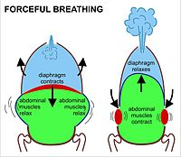
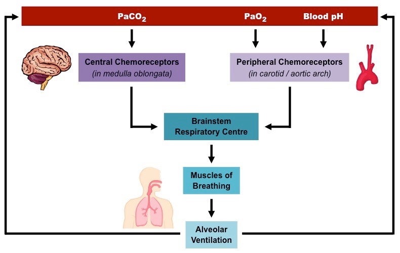
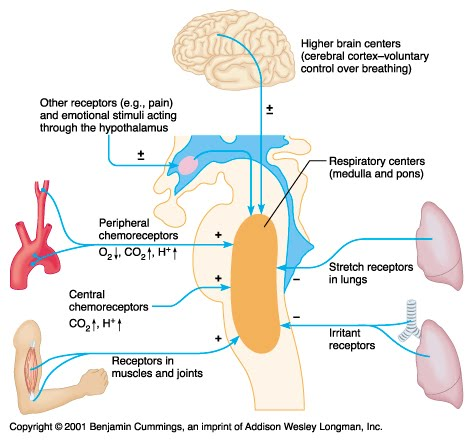

Sometimes the simplest things go unnoticed. Like breathing for example. You do it everyday. But is breathing really that simple? People overlook the extremely complicated processes that occur within our own bodies in a matter of seconds. However, many of you are aware of the biological processes that allow breathing to happen. The respiratory system is the biological system that uses our mouths, noses, throat, lungs, and diaphragm to allow the exchange of oxygen and carbon dioxide in and out of our bodies. (https://www.livescience.com/26825-human-body-system-respiration-infographic.html). On the other hand, the chemical processes explain why the respiratory system works. By understanding how people breathe, we can better understand the importance of the air around us.
Let’s start with the obvious, breathing in and out. These are the first and last steps of the respiratory process. The reason that we are able to breathe air in and out of our bodies is due to Boyle’s Law. Boyle’s Law is one of the gas laws in nature, and air is a mixture of gases, which allows the following to take place: how the diaphragm works. Boyle’s Law is the inverse relationship between volume and pressure. This law relates to the diaphragm because when the diaphragm expands/contracts when a person inhales, the volume within our body expands since the lung expands. When this happens, there are less collisions of air particles colliding with the insides of our bodies, so pressure in our lungs decrease. Consequently, outside air rushes into the lungs since gases naturally move from areas of higher pressure to lower pressures. When exhaling, the process is reversed. The “muscles decrease the size of your chest cavity and squeeze your lungs. This decreases their volume, so pressure inside the lungs increases. As a result, air rushes out of the lungs, flowing from an area of higher to lower pressure” (https://www.ck12.org/chemistry/gas/rwa/Breathing-Muscles/). So Boyle’s Law allows air in and out our bodies and measures the partial pressures of oxygen and carbon dioxide, but how do we end up using oxygen and taking out carbon dioxide? What happens to all the other elements or compounds that compose air? This respiratory system works more miracles than you can imagine.By understanding how people breathe, we can better understand the importance of the air around us.

The body needs oxygen in order to function. Why may you ask? Well this is because the cells in people’s bodies need oxygen to break the chemical bonds in nutrients we eat to obtain ATP energy. The human body cells gain energy by breaking chemical bonds in nutrients such as proteins, carbohydrates, and other nutritious foods. Whenever energy is gained in a system, it is known as an endothermic reaction, so breaking bonds is an endothermic process, Air is composed of about 80% nitrogen, 20% oxygen, and other gases including 0.04% carbon dioxide. The body uses a system of equilibrium in order to make sure we have the right amount of oxygen and carbon dioxide going in and out of our body. There are detectors in our body that measure the pH of our blood to determine and control our breathing pattern. These detectors are called “the peripheral chemoreceptors – although sensitive to changes in carbon dioxide levels and pH, as well as oxygen levels – mainly monitor oxygen.”(https://www.nursingtimes.net/clinical-archive/respiratory-clinical-archive/every-breath-you-take-the-process-of-breathing-explained-08-01-2018/). There are central chemoreceptors, or the main pH detectors, located in the brain, that are in charge of controlling systems for breathing. As carbon dioxide levels rise, the blood pH levels fall. This is picked up by the pH detectors in the brain and, through feedback mechanisms, signals are sent to alter and control people’s breathing.

So thanks to our brain, which is always working, our body sets up natural chemical processes that are linked to one another to help us respirate. In addition, the brain is always able to give orders to the body to inhale and exhale due to the oxygen saturation limit. If the even distribution of oxygen-saturated hemoglobin within our body is not around 98% (which is happening approximately every second), then our brains signal for us to breathe. This is why breathing may be considered something you do subconsciously, as you need oxygen to survive and function. If we weren’t inhaling and exhaling every second, the concentrations of oxygen and carbon dioxide would get out of hand, and the equilibrium would be disturbed! To conclude, breathing is a biological process as much as it is a chemical one, and hopefully you can now understand why!
